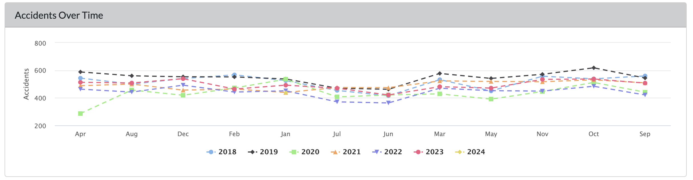
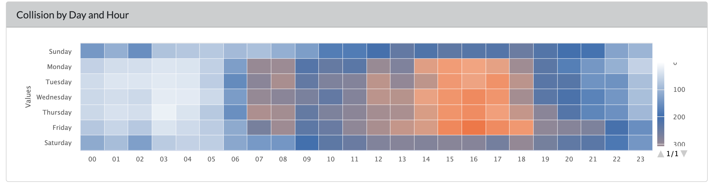
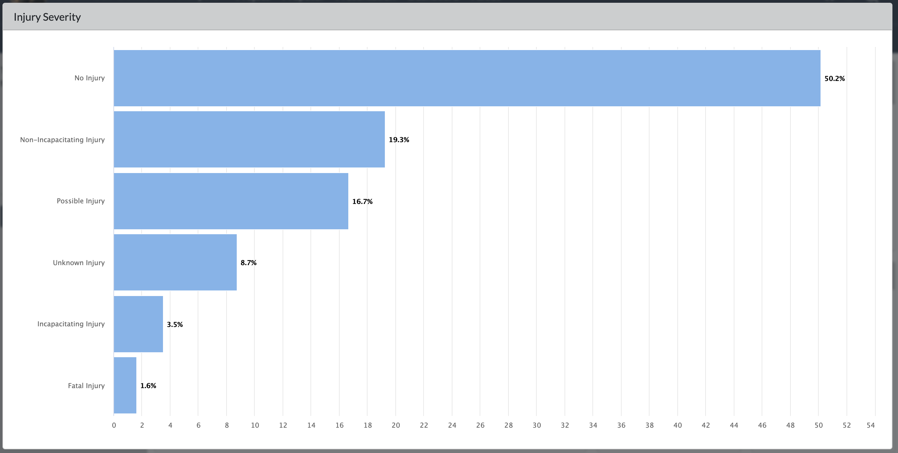
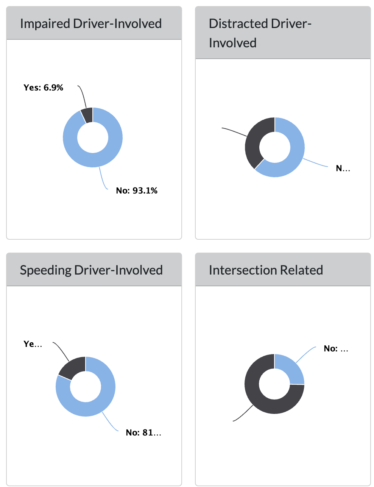
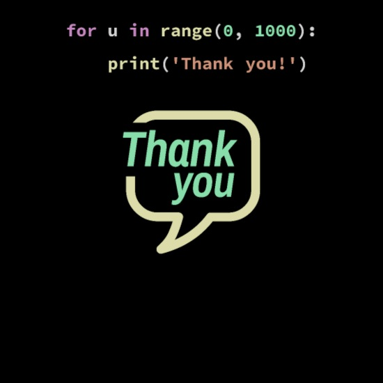

Tucson Car Collision Analysis
INFO 526 - Fall 2023 - Project Final
Introduction
The primary goal of the project is to develop a user-friendly visualization tool that provides detailed insights into the frequency, severity, and causes of traffic accidents in Tucson.
GIS Data from the City of Tucson - This data set contains publicly-available records of vehicle collisions from the Tucson Police Department, covering the period from March 2022 to the present.
Key variables in this data set are:
Date of collision
Injury severity
Manner of collision
Fatality status
Project Approach
- Utilize R Shiny to create interactive dashboard, allowing users to filter and explore the data based on specific criteria (e.g., time period, accident severity).
- Implement Leaflet for interactive maps to display spatial data and identify accident hotspots within Tucson using the latitude and longitude coordinates in the dataset.
- Use ggplot2 and Plotly for creating dynamic and static visualizations that can be adjusted according to user input.
Question 1
Does day of the week and/or time of day affect severity and the number of accidents?
Key variables to use:
- TimeOccu (time at which accident occurred)
- Day (day of week accident occurred)
- InjurySeverity (how serious the injury caused by accident was)
These variables may help us explore why certain days of the weeks or times of day lead to more accidents.
Time series of Accidents
- This plots shows a monthly time series of Tucson car accidents from 2018 to 2024.
Key Observations
Tucson experiences the most accidents in 2019 compared to any other year. 2020 sees the least amount of accidents.
Fewer accidents occur in summer months than winter months.

Times with higher Accident
This plots show heat map of number of accidents in each hour of everyday in a week.
Except of weekends, every day from 1pm to 6 pm most accidents happens

Question 2
What is the relationship between the type of violation and if the accident resulted in a fatality?
Key variables to use:
- FatalCollision
- TotalFatalities
We will create a series of stacked bar plots that show the number of accidents based the type of violation. Pie charts may be included to provide a high-level summary of the percentage of crashes per violation type.
Collision Severity
- 50.2% of accidents without injury
- 1.6% of accidents with fatal injury

Collision Reason
74.4% of collisions involve Intersection
38.1% of collisions involve Distracted Driver
Intersections are the most dangerous locations

Thank You
